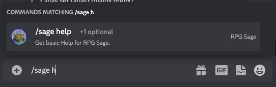
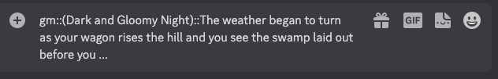
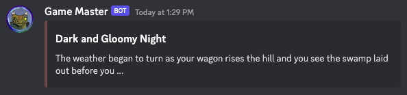
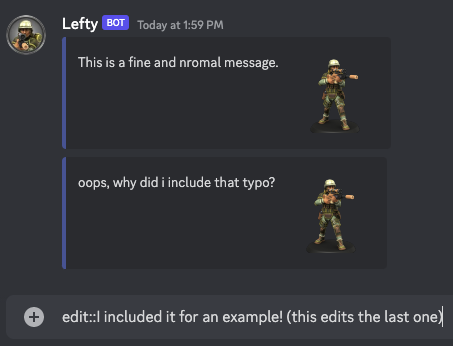
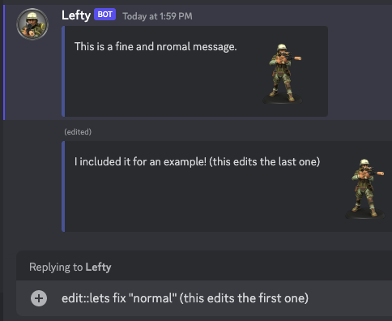
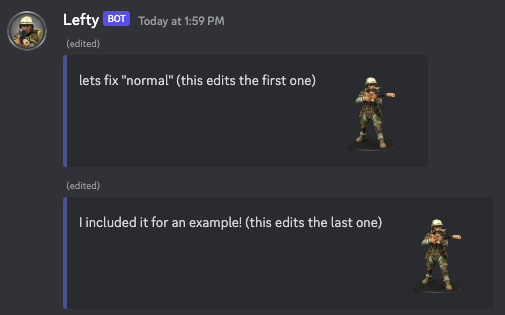

RPG Sage:
Command Guide
Quick Notes
Most commands are NOT case sensitive.
Brackets
{} are for emphasis, either showing you where to put information (such as a name) or listing values you can choose from ({GameAdmin|ServerAdmin|SageAdmin}).
Don't use them in your commands.
DO:
sage! help dialog
DON'T:
sage! help {dialog}
Long replies (those that require more than 2 actual messages sent) often are sent by DM.
this may be altered in the future to use threads
Commands that expect a boolean value (true or false) accept the following:
true, t, 1 or false, f, 0
Many of the commands do not require spaces
sage!dcsbylevel and sage! dcs by level should work the same.
1. Inviting RPG Sage
To invite RPG Sage to your Discord Server, click here.
Sage asks for various permissions needed to function as expected:
some features are still in development

- Manage Roles: A future Sage feature will create/manage roles for games. in development
- Manage Channels: A future Sage feature will create/manage channels for games. in development
- Create Invite: A future Sage feature will create invites for games posted as looking for players. not yet in development
- Manage Emojis and Stickers: A future Sage feature may allow custom emojis for games. not yet in development
- Manage Webhooks: This is how Sage posts dialog as characters instead of their players.
- Read Messages: Sage needs to be able to read messages to parse commands.
- Send Messages: Sage needs to be able to send messages to respond to commands.
- Manage Messages: Sage needs to be able to manage messages to function (such as edit, pin, or delete messages).
- Embed Links: Sage needs to be able to embed links to link game material to their source (such as Archives of Nethys).
- Attach Files: Sage's import command can attach a .txt of your character formatted in markdown.
- Read Message History: Sage needs to be able to search messages to function. A future Sage feature may allow for more enhanced game/dialog specific search. (not yet in development)
- Add Reactions: Sage needs to be able to add reactions to inform and interact with users.
- Use External Emojis: Sage needs access to the default emoji set on RPG Sage's Discord server.
- Use Application Commands: I am currently moving most of the commands from posting as a message to Slash Commands!
2. Command Types
The primary ways in which you will interact with Sage are through commands. Sage has four types of commands that it responds to:
- Dialog Commands
- Dice Commands
- Message Commands
- Slash Commands
Dialog and Dice commands will be discussed later.
2a. Message Commands
Message Commands are commands given to Sage by posting a message into chat, either a channel where Sage has access or via a direct message to Sage.

To further understand a Message Command, think of them as having the following components: Prefix, Action, Command, SubCommands, and Arguments.
- Prefix is there so that you can have multiple bots that know to ignore commands intended for other bots.
- Action distinguishes between telling Sage to do something and asking Sage to find something.
- Command is specifically what task you want Sage to do.
- SubCommand break down commands further such as add/remove.
- Arguments1,2 are any details you need to give Sage so that it can do the task for you.
1Arguments are sometimes given as one word (name), multiple words with quotes around them ("Vash the Stampede"), and other times key/value pairs (name="Vash the Stampede").
2If you see in these guides (or in the help) @UserMention, you need to ensure that Discord created a proper User Mention for Sage to be able to properly find the user. A "Proper User Mention" means that Discord recognized the user you were trying to mention and replaced your entered text with a link to the user. See image below.

sage!help dice is a simple command with a Prefix sage, Action !, Command help, and SubCommand dice
2b. Slash Commands
Slash Commands are commands given to Sage by typing /sage and following the prompts Discord gives you to complete the command.

Note that Sage cannot respond to a DM from you unless you have opened a channel with it, which is done via the Slash Command: /sage dm.
2c. Command Prefix
By default, Sage commands that start with ! or ? require a prefix.
sage!help
sage, Action !, and Command help.
A Server Owner or "SageAdmin" can change Sage's prefix with the prefix command:
sage!prefix set newPrefix
sage, Action !, Command prefix, SubCommand set and Argument newPrefix.
A Server Owner or "SageAdmin" can also remove Sage's prefix with the prefix command:
sage!prefix unset
sage, Action !, Command prefix, and SubCommand unset.
When the prefix is unset, commands look like:
!help
!, and Command help.
2d. Command Permissions
By default, Sage responds to all commands in any channel it has access to read and send messages.
That said, "admin" commands (those that manipulate Sage, the Server, or Games, denoted by !!) require permissions with Sage.
The Server Owner has full access and must give permission to others.
Sage Admin: Full access to Sage on the server, can assign Server Admin and Game Admin permissions and perform their actions.
sage!!admin add @UserMention SageAdmin
sage, Action !!, Command admin, SubCommand add, and Arguments @UserMention and SageAdmin.
Server Admin: Can configure channels to work with Sage, can assign Game Admin permissions and perform their actions.
sage!!admin add @UserMention ServerAdmin
sage, Action !!, Command admin, SubCommand add, and Arguments @UserMention and ServerAdmin.
Game Admin: Can configure Sage's game tables and channels, can assign Game Masters and perform their actions.
sage!!admin add @UserMention GameAdmin
sage, Action !!, Command admin, SubCommand add, and Arguments @UserMention and GameAdmin.
3. RPG Sage Help
/sage help category:Dialog Commands
This slash command provides help for the selected category.
Slash commands are NOT posted to chat for RPG Sage to respond to, they are activated by typing a / (slash) and then selecting from the options provided by Discord.
Typing /sage before selecting the command will help remove slash commands on the server that are not related to RPG Sage.

4. Admin (Administrative) Commands
These commands are how you manage RPG Sage on your server. They allow a Server Owner to assign other admins at various levels of control (admins, roles) as well as configure some default options (colors, emoji) at the Server level.
4a. Sage Prefix Admin
/sage help category:Sage Prefix Management
These commands let a Server Owner or "SageAdmin" set or unset Sage command prefixes.
sage!! prefix get
sage!! prefix set {commandPrefix; ex: sage}
sage!! prefix sync
sage!! prefix unset
4b. Game, Sage, Server Admin
/sage help category:Sage Admin Management
These commands are for server owners to configure admin access to Sage.
sage!! admin add @UserMention {GameAdmin|ServerAdmin|SageAdmin}
sage!! admin remove @UserMention
sage!! admin update @UserMention {GameAdmin|ServerAdmin|SageAdmin}
• GameAdmin can only manage games.
• ServerAdmin can manage games and server channels.
• SageAdmin can manage all things Sage.
4c. Color Admin
/sage help category:Color Management
These commands are for managing the color that lines a post's embedded content.
sage!! color get {ColorType}
sage!! color get {server|game} {ColorType}
sage!! color list
sage!! color list {server|game}
sage!! color set {ColorType} {hexColorValue}
sage!! color set {server|game} {ColorType} {hexColorValue}
sage!! color sync
sage!! color sync {server|game}
sage!! color unset {ColorType}
sage!! color unset {server|game} {ColorType}
When choosing server or game you are deciding if you are working with Server colors or Game colors.
Use sage!! color list to see all of the acceptable values for ColorType.
4d. Emoji Admin
/sage help category:Emoji Management
These commands are for managing the emoji used for various parts of Sage.
sage!! emoji get {EmojiType}
sage!! emoji get {server|game} {EmojiType}
sage!! emoji list
sage!! emoji list {server|game}
sage!! emoji set {EmojiType} {emoji}
sage!! emoji set {server|game} {EmojiType} {emoji}
sage!! emoji sync
sage!! emoji sync {server|game}
sage!! emoji unset {EmojiType}
sage!! emoji unset {server|game} {EmojiType}
When choosing server or game you are deciding if you are working with Server emoji or Game emoji.
Use sage!! emoji list to see all of the acceptable values for EmojiType.
4e. Server Role Admin Not Fully Functional
/sage help category:Server Management
These commands are for managing the Roles used for admins of Sage.
sage!! server role list
sage!! server role remove {ServerRoleType}
sage!! server role set @RoleMention {ServerRoleType}
ServerRoleType values: SageAdmin, ServerAdmin, GameAdmin
5. Game Admin (Administrative) Commands
These commands are for configuring a "Game Table" (a game and group of channels that are all part of a game).
5a. Game Admin
/sage help category:Game Management
These commands are for managing games.
sage!! game archive
sage!! game archive list
sage!! game count
sage!! game create name="Dragon Saga: Questbound!"
sage!! game create name="Dragon Saga: Questbound!" {optionKey}="optionValue"
sage!! game details
sage!! game list
sage!! game set {optionKey}="optionValue"
sage!! game set name="Dragon Saga: End Times ..."
sage!! role list
Game Options (can set multiple options at the same time):
crit="timestwo|rolltwice|addmax|unset" DnD5e and PF2e only
• TIMESTWO default rolls the dice and multiplies the results x2.
• ROLLTWICE rolls the damage twice and adds the results together.
• ADDMAX RPG Sage House Rule rolls the dice once and then adds max damage to the result.
• UNSET uses the crit method inherited from either the game or the server.
dialogtype="embed|post|unset"
This determines how Sage's dialog posts are handled.
• EMBED default uses an embed that includes the character's avatar on the right.
• POST uses a simple message post some screen readers cannot read Discord embeds.
• UNSET uses the dialogtype method inherited from either the game, user, or server.
diceoutput="xxs|xs|s|m|l|xl|xxl|rollem|unset"
This determines how compact or expanded the dice results are displayed.
• M default
• ROLLEM uses the diceoutput method that most closely emulates what Rollem uses.
• UNSET uses the diceoutput method inherited from either the game or the server.
dicepost="post|embed|unset"
• POST will output dice results in a simple post.
• EMBED default will output dice results in an embed in a post.
• REPLY will output dice results in a reply to the input. future feature
• UNSET uses the dicepost method inherited from either the game or the server.
dicesecret="dm|gm|hide|ignore|unset"
This determines how Sage reacts to dice with the word "secret" in them.
• DM tells Sage to find the first available GM and send the dice results to them as a DM.
• GM tells Sage to find a GM channel and send the dice results there. If no GM channel exists, this is treated as DM.
• HIDE tells Sage to hide/redact the results using spoiler tags.
• IGNORE default simply ignores them.
• UNSET uses the dicesecret method inherited from either the game or server.
type="dnd5e|e20|pf1e|pf2e|quest|sf|none"
• DND5E Dungeons & Dragons 5e
• E20 Essence 20 system (G.I. Joe, Power Rangers, Transformers, etc.)
• PF1E Pathfinder RPG
• PF2E Pathfinder 2e
• QUEST Quest RPG
• SF Starfinder
• NONE default
The primary place this is noticable is the dice engine. For instance, PF2E dice know about ACs, DCs, and how to calculate Critical Success and Failure.
5b. Channel Admin
/sage help category:Channel Management
These commands are for managing what features are available on each channel.
sage!! channel add #ChannelReference {optionKey}="optionValue"
sage!! channel details
sage!! channel list {game|server}
sage!! channel remove #ChannelReference
sage!! channel set {optionKey}="optionValue"
Channel Options (can set multiple options at the same time):
crit="timestwo|rolltwice|addmax|unset" DnD5e and PF2e only
• TIMESTWO default rolls the dice and multiplies the results x2.
• ROLLTWICE rolls the damage twice and adds the results together.
• ADDMAX RPG Sage House Rule rolls the dice once and then adds max damage to the result.
• UNSET uses the crit method inherited from either the game or the server.
dialogtype="embed|post|unset"
This determines how Sage's dialog posts are handled.
• EMBED default uses an embed that includes the character's avatar on the right.
• POST uses a simple message post some screen readers cannot read Discord embeds.
• UNSET uses the dialogtype method inherited from either the game, user, or server.
diceoutput="xxs|xs|s|m|l|xl|xxl|rollem|unset"
This determines how compact or expanded the dice results are displayed.
• M default
• ROLLEM uses the diceoutput method that most closely emulates what Rollem uses.
• UNSET uses the diceoutput method inherited from either the game or the server.
dicepost="post|embed|unset"
• POST will output dice results in a simple post.
• EMBED default will output dice results in an embed in a post.
• REPLY will output dice results in a reply to the input. future feature
• UNSET uses the dicepost method inherited from either the game or the server.
dicesecret="dm|gm|hide|ignore|unset"
This determines how Sage reacts to dice with the word "secret" in them.
• DM tells Sage to find the first available GM and send the dice results to them as a DM.
• GM tells Sage to find a GM channel and send the dice results there. If no GM channel exists, this is treated as DM.
• HIDE tells Sage to hide/redact the results using spoiler tags.
• IGNORE default simply ignores them.
• UNSET uses the dicesecret method inherited from either the game or server.
gametype="dnd5e|e20|pf1e|pf2e|quest|sf|none"
• DND5E Dungeons & Dragons 5e
• E20 Essence 20 system (G.I. Joe, Power Rangers, Transformers, etc.)
• PF1E Pathfinder RPG
• PF2E Pathfinder 2e
• QUEST Quest RPG
• SF Starfinder
• NONE default
The primary place this is noticable is the dice engine. For instance, PF2E dice know about ACs, DCs, and how to calculate Critical Success and Failure.
type="ic|ooc|misc|gm|unset"
• IC denotes an In Character channel, thus only Dialog and Dice are allowed for GMs and Players.
• OOC denotes an Out of Character channel, thus all Sage commands are allowed for GMs and Players.
• MISC denotes an Miscellaneous channel, thus all Sage commands are allowed for GMs and Players.
• GM denotes an Game Master channel, thus all Sage commands are allowed for only GMs.
• UNSET tells Sage that this isn't a specific channel type, allowing you to customize the options.
Note: A GM only channel is where secret dice rolls are sent!
5c. GM (Game Master) Admin
/sage help category:Game GM Management
These commands are for managing Game Masters for games.
sage!! gm add @UserMention
sage!! gm add @UserMention {@OptionalUserMention}
sage!! gm list
sage!! gm remove @UserMention
sage!! gm remove @UserMention {@OptionalUserMention}
"OptionalUserMention" is there to show you can add or remove multiples.
5d. NPC (Non Player Character) Admin
/sage help category:NPC Management
These commands are for managing Non Player Characters for games.
sage!! npc create name="Farmer Bob" token="http://url_to_token_image" avatar="http://url_to_avatar_image"
sage!! npc delete name="Farmer Bob"
sage!! npc details name="Farmer Bob"
sage!! npc list "optionalFilter"
sage!! npc update name="Farmer Bob" avatar="http://url_to_avatar_image"
sage!! npc update name="Farmer Bob" token="http://url_to_token_image"
sage!! npc update name="Farmer Bob" color="#FF00AA"
sage!! npc update oldname="Farmer Bob" newname="Blacksmith Bob"
Images should be urls. If you embed images in your post, the first one will be the token and the second one the avatar.
You can mix and match the avatar, token, and color options when you create or update a PC.
5e. Player Admin
/sage help category:Game Player Management
These commands are for managing Players for games.
sage!! player add @UserMention
sage!! player add @UserMention {@OptionalUserMention}
sage!! player list
sage!! player remove @UserMention {@OptionalUserMention}
"OptionalUserMention" is there to show you can add or remove multiples.
5f. PC (Player Character) Admin
/sage help category:PC Management
These commands are for managing Player Characters.
sage!! pc create name="Bardok the Brave" token="http://url_to_token_image" avatar="http://url_to_avatar_image"
sage!! pc delete name="Bardok the Brave"
sage!! pc details name="Bardok the Brave"
sage!! pc list "optionalFilter"
sage!! pc update name="Bardok the Brave" avatar="http://url_to_new_avatar_image"
sage!! pc update name="Bardok the Brave" token="http://url_to_new_token_image"
sage!! pc update name="Bardok the Brave" color="#FF00AA"
sage!! pc update oldname="Bardok the Brave" newname="Bardok the Cowardly"
Images should be urls. If you embed images in your post, the first one will be the token and the second one the avatar.
You can mix and match the avatar, token, and color options when you create or update a PC.
5g. Companion (Alt, Companion, Familiar, Hireling, etc) Admin
/sage help category:PC/NPC Companion Management
These commands are for managing companions for player characters.
sage!! companion create charname="Bardok the Cowardly" name="Ser Stallion" token="http://url_to_token_image" avatar="http://url_to_avatar_image"
sage!! companion delete charname="Bardok the Cowardly" name="Ser Stallion"
sage!! companion details name="Ser Stallion"
sage!! companion list "optionalFilter"
sage!! companion update charname="Bardok the Cowardly" name="Ser Stallion" avatar="http://url_to_avatar_image"
sage!! companion update charname="Bardok the Cowardly" name="Ser Stallion" token="http://url_to_token_image"
sage!! companion update charname="Bardok the Cowardly" name="Ser Stallion" color="#FF00AA"
sage!! companion update charname="Bardok the Cowardly" oldname="Ser Stallion" newname="Ser Bolts'a'lot"
Images should be urls. If you embed images in your post, the first one will be the token and the second one the avatar.
You can mix and match the avatar, token, and color options when you create or update a PC.
6. Dialog Commands
/sage help category:Dialog Commands
These commands are how you interact with the dialog engine of Sage.
When posting dialog, you do not need to use a command prefix.
Each different dialog type can be configured to have its own default color.
6a. Dialog Post Command
{type}::{name}({display name})::(title)::{color}::{avatar}::{content}
• {type}: gm, npc, enemy, ally, pc, alt, companion, hireling
• {name}: the name of the npc, pc, or companion to post as
• optional for gm; optional for PCs in a game
• {display name}: the name to post as
• optional: defaults to character name or 'Game Master' for GM
• {title}: a title or descripiton of the dialog
• optional
• {color}: a color to override the dialog color with
• optional: expects hex value 0x000000 or #FFFFFF
• {avatar}: a url to override the avatar image
• optional
• {content}: everything you want to post in your dialog
• accepts normal discord/markup as well as custom Sage markup
game master input

game master output

game master output
6b. Dialog Edit Command
edit::{updated dialog content}
If you send your edited content as a new message in the dialog channel, it will update the last dialog you posted.
If you reply to a message with dialog that you posted, you will edit the message that you are replying to.



6c. Dialog Alias Commands
These commands are for managing aliases for all your dialog needs.
sage!! alias delete {alias}
sage!! alias list
sage!! alias set {alias} {dialog prefix}
An alias is a simple word or name with no punctation.
A dialog prefix can include an alias and even some content.
Example: sage!! alias set gorm npc::Gorm Greathammer::
6d. Character Auto Dialog
These commands allow you link channels and characters so that RPG Sage will repost everything you send to that channel as the assigned character.
To configure your PC for the current Game in the current channel:
sage!! pc auto on
sage!! pc auto off
To configure a specific PC in a specific channel:
sage!! pc auto on name="Bardok the Cowardly" #knightly-quest-ic
sage!! pc auto off name="Bardok the Cowardly" #knightly-quest-ic
To configure the GM in the current channel:
sage!! gm auto on
sage!! gm auto off
To configure a specific NPC in a specific channel:
sage!! gm auto on name="Farmer Bob" #farm-side-quest-ic
sage!! gm auto off name="Farmer Bob" #farm-side-quest-ic
7. Dice Commands
/sage help category:Dice Commands
These commands are how you roll dice with Sage.
7a. Simple Dice
[1d20]
7b. Dice w/ description
[1d20 attack]
[1d6 damage]
7c. Dice w/ modifiers
[1d20 + 5 Description]
[1d20 + 5]
[1d8 + 2 + 1d6]
[1d8 sword + 2 strength + 1d6 holy]
7d. Dice w/ tests
[1d100 < 25]
[1d20 + 5 >= 10 Description]
[1d20 >= 10]
7e. Dice w/ multiple sets
[1d20 attack; 1d8 damage]
[1d20+5 attack; 1d8 + 2 slashing damage]
[1d20+2 attack; 1d4 dagger + 2d6 sneak damage]
7f. Dice w/ multiple sets and tests
[1d20 > 10 attack; 1d8 damage]
[1d20 > 5 (miss chance); 1d20+5 >= 15 attack; 1d8 + 2 slashing damage]
7g. Dice w/ target certain game systems only
[1d20 + 5 vs 10 Description]
[1d20 ac 10] DnD5e, PF2e
[1d20 dc 10] DnD5e, PF2e
[1d20 dif 10] E20
[1d20 vs 10] DnD5e, E20, PF2e, Quest
Future releases will expand this for other game systems.
7h. Dice w/ output override
[XL 1d20 + 20 vs ac 10 greater striking rapier, fatal d8; 1d6 piercing + 4 dex + 2d6 holy + 4d6 sneak]
Output options: xxs, xs, s, m, l, xl, xxl, rollem
Default Dice Output: m
Default Dice Output can be set at the Server, Game, and Channel level
7i. Dice w/ game override
[pf2e 1d20 dc 10 check]
[dnd5e 1d20 ac 10 attack]
Used when a server or game defaults to a different mode than you want for your dice.
Future releases will expand this for other game systems.
7j. Dice Macros
/sage help category:Dice Macros
These commands are for managing macros to make complex dice rolls.
sage!! macro delete all
sage!! macro delete category="{category}"
sage!! macro delete name="{name}"
sage!! macro details name="{name}"
sage!! macro list
sage!! macro list category="{category}"
sage!! macro move name="{name}" category="{category}"
sage!! macro set name="{name}" [{dice}]
sage!! macro set name="{name}" category="{category}" [{dice}]
Example: sage!! macro set name="three daggers" category="daggers" [1d20+8;1d6][1d20+4;1d6][1d20;1d6]
Usage: [three daggers]
Example: sage!! macro set name="swords" [3MAP-4#1d20+8{ac};1d6]
Usage: [swords ac=10]
Macro Categories are helpful in grouping related macros together, but they also serve a special function for Pathfinder 2e players using imported characters. Macros with the same category name as an imported Pathfinder 2e character name will show up in the imported character's sheet so that you can select then and roll them with the click of a button. (Will provide link to importing documentation as it is finished.)
7k. Dice Macro Arguments
Macros allow arguments, making them very flexible but also easy to overcomplicate.
Arguments are indicated with curly braces: { and }
The two primary types of arguments are: indexed and named.
Note: If you use an argument more than once in your macro, it will be replaced every time.
Indexed arguments start with 0 go up: {0}, {1}, {2}, etc
Example Macro: "attack" [1d20 {0} atk; 1d6 {1} dmg]
Example Usage: [attack "+1" "+2"]
Example Roll: [1d20 +1 atk; 1d6 +2 dmg]
Named arguments should can only letters, numbers, and underscores: {bless_bonus}
Example Macro: "attack" [1d20 {bless_bonus} atk; 1d6 {bless_bonus} dmg]
Example Usage: [attack bless_bonus="+1"]
Example Roll: [1d20 +1 atk; 1d6 +1 dmg]
Arguments can have default values: {atk_bonus:+0}, {dmg_type:P}
Note: A default value of 0 (or +0) will NOT be shown in the final dice roll
Example Macro: "dagger" [1d20 {atk_bonus:+0} atk; 1d4 {dmg_type:P} dmg]
Example Usage: [dagger]
Example Roll: [1d20 atk; 1d4 P dmg]
Example Usage: [dagger atk_bonus="+1"]
Example Roll: [1d20 +1 atk; 1d4 P dmg]
Example Usage: [dagger atk_bonus="+2" dmg_type="S"]
Example Roll: [1d20 +2 atk; 1d4 S dmg]
Two special argument types are: "vs" {vs} and "remaining" {...}
VS is a convenience for setting the roll's target success value in d20 style games; AC, DC, and VS are all acceptable as {ac}, {dc}, or {vs}
Example Macro: "attack" [1d20 {ac} atk; 1d6 dmg]
Example Usage: [attack ac=10]
Example Roll: [1d20 ac 10 atk; 1d6 dmg]
Remaining is more advanced- it takes every indexed argument that wasn't explicitly used in your macro and adds them all with spaces between them.
Example Macro: "extras" [1d20 {0} atk; 1d6 {1} {...} dmg]
Example Usage: [extras +1 +3 "+1d6 sneak" "+1d4 fire" "+1 holy"]
Example Roll: [1d20 +1 atk; 1d6 +3 +1d6 sneak +1d4 fire +1 holy dmg]
Note: If you have more than one "remaining" arg in your macro, they will all get the same set of values.
8. Maps prototype
Yes, you heard that right, we can do maps!
And all you have to do is create a metadata text file that has a name ending in .map.txt and then drop the file in the channel you want your map.
Sage will take it from there!
Note about prototype.
This feature is still a prototype, perhaps consider it an alpha release.
The interface and feedback aren't as clean as we want and the execution of features is a tad clumsy.
But, we assure you that we already have planned improvements that will make it much better!
Note about image storage.
RPG Sage doesn't store any images used in the creation of maps.
Therefore, you will need to make sure that they are all public urls that will be available until you are no longer using the map.
The simplest way to do this is to post the image(s) into a discord channel and then grab the url from the uploaded image(s).

8a. Map Controls
Movement Arrows left side
Move your active token (or terrain if GM) one square in the direction indicated.
Gear
Disabled; saved for future use.
Mountain
GM uses this button to cycle through the terrain images to select the active terrain.
Yellow Circle
Cycle through aura images (for the active token) to select the active aura.
A token can have any number of auras configured, but only one can be active at a time.
(This also applies to terrain for GMs.)
Person
Cycle through token images to select the active token.
Players can only cycle through tokens assigned to them.
GMs cycle through all tokens.
If you are using RPG Sage's Game feature, a PC's token (along with familiars/companions) should be added automatically to the map when trying to select their token.
There is a known bug in the current code that will likely spawn a PC's token even if you already assigned them a token when making the map.
Up / Down Arrows right side
GMs can use this to reorder (alter the z-index) of the terrain and tokens.
Red X
GM uses this button to delete terrain / tokens.
The thought was you import a map for an encounter with all baddies and delete them as they are removed from play.
8b. Map File Contents
A map file consists of "blocks" that detail each image you want on the map.
The four types of block are: map (the map's background image), terrain (a moveable piece of terrain/trap/hazard), aura (a toggleable aura that moves with a token/terrain), token (a pc/npc).
The layers are drawn from the bottom to top (map, terrain, aura, token) and initially drawn in the order listed in the file within each layer (you can change their draw order later via the interface).
Only the first map layer will be drawn.
Each block must have the url to the image and the name of the image (in the case of the [map] block, this is the name of the map that RPG Sage will display).
- url = url to the image
- name = name of the map
- grid = number of columns (first) and rows (second): 24x11
- spawn = column (left) and row (right) where where new tokens appear: 2,1
[map] background image/layer
- url = url to the image
- name = name of the terrain or object
- size = width (first) and height (second) of terrain: 1x1
- position = starting column (left) and row (right) on the map: 3,2
- Only a GM can move an object of this layer
[terrain] bottom layer
- url = url to the image yes, it requires images for now
- name = name of the aura
- anchor = name of the token (or terrain) to anchor the aura to
- opacity = how transparent the image is (0% - 100%): 50%
- size = width (first) and height (second) of aura: 1x1
- position = column (left) and row (right) on the map relative to anchor
- A 5 ft. emanation from a 1x1 token would have an
anchor,size=3x3, andposition=-1,-1 - Auras will change greatly in the next iteration.
[aura] middle layer
- url = url to the image
- name = name of the PC or NPC
- size = width (first) and height (second) of token: 1x1
- position = starting column (left) and row (right) on the map: 3,2
- user = Discord handle of the User to ownership of the token (PCs only): @PlayerName#1234
[token] top layer
9. Character Import
/sage import
This slash command is used to import characters so that you can view their stats and quickly roll dice/macros.
The two main options (pathbuilder2e-id and e20-pdf) are for your character source and you can only use one of them at a time.
The other two options (attach and pin) change how Sage posts your imported character and you can use either, both, or neither of them.
/sage import pathbuilder2e-id:12345
This requires the export "Pathbuilder 2e JSON ID" that you get from Pathbuilder 2e via the "Export JSON" command.
/sage import e20-pdf:joe-cool.pdf
This requires either the url to a PDF or the url to a Discord message that has a PDF file as an attachment.
The PDF must be one official PDFs downloaded from Renegade Games Studios.
attach="true"
When set to true, this tells Sage to post the character as a .txt file attachment instead of creating an interactive character sheet.
pin="true"
When set to true, this tells Sage to pin the post that it creates for the character.
10. Other Commands
The following commands are not system specific.
10a. Coin / Currency Calculator
sage! {1pp} {-2gp} {+3sp} {-4cp}
sage! {1pp} {2gp} {3sp} {4cp}
10b. Weather Report Generator
/sage help category:Random Weather Report
This command creates a random weather report.
sage! weather {climate} {elevation} {season}
• Climate Options: Cold | Temperate | Tropical
• Elevation Options: SeaLevel | Lowland | Highland
• Season Options: Spring | Summer | Fall | Winter
11. Pathfinder 2e Commands
The following commands are specific to Pathfinder 2e.
11a. Golarion / Absalom Staton Info (days & months)
/sage help category:Golarion Calendar Info
These commands are for viewing the dates, days, and months of the Golarion (Pathfinder) and Absalom Station (Starfinder) calendars.
sage! date {yyyy-mm-dd}
- Displays the given date on Golarion, Absalom Station, and on Earth. Includes season.
sage! days
- Lists the days of the week on Golarion and Absalom Station,.
sage! months
- Lists the months of the Golarion and Absalom Station calendars (along with how many days are in each).
sage! today
- Displays today's date on Golarion, Absalom Station, and on Earth. Includes season.
11b. Pathfinder 2e DCs
/sage help category:PF2e DC Values
These commands are for viewing the various DCs used in Pathfinder 2e.
sage! dc by level {level}
sage! dc by spell level {level}
sage! dcs by level
sage! simple dc {proficiency}
sage! {proficiency} simple dc
11c. Pathfinder 2e Lists
sage! list {deities|gods} by domain {domain}
sage! list {weapons|armor|spells} by trait {trait}
Future releases will expand on these lists.
11d. Pathfinder 2e Content Search
These commands perform full text searches.
sage? {searchTerm}
sage? {searchTerm} -{categoryOrObjectType}
Category/ObjectType examples: Background, Feat, Spell, etc.
This isn't fully operational, nor is the data complete yet.
11e. Pathfinder 2e Content Find
These commands perform searches only against names.
sage?! {searchTerm}
sage?! {searchTerm} -{categoryOrObjectType}
Category/ObjectType examples: Background, Feat, Spell, etc.
This isn't fully operational, nor is the data complete yet.
11f. Pathfinder 2e Spell Lists
These commands allow you to view various types of spell lists
sage! spells {tradition} {level|Cantrips}
sage! spells {tradition} {level|Cantrips} by school
sage! {level} {tradition} spells
sage! {level} {tradition} spells by school
sage! {tradition} cantrips
sage! {tradition} cantrips by school
sage! {tradition} spells {level|Cantrips}
sage! {tradition} spells {level|Cantrips} by school
The following creates a specialized list of spells by merging or excluding traditions
sage! spells {level|Cantrips} {+tradition} {-tradition} {|tradition} {&tradition}
11g. Pathfinder 2e Focus Spell Lists
sage! focus spells {Archetype|Class|Domain}
sage! {Archetype|Class|Domain} focus spells
11h. Pathfinder 2e Starting Wealth Info
sage! starting wealth
sage! starting wealth {level}
11i. Pathfinder 2e Income Info
sage! income earned
- Shows the entire table 4-2: Income Earned
sage! income earned {taskLevel}
- Shows the results for the given level.
sage! income earned {proficiency} {taskLevel}
- Shows the results for the given level and proficiency.
12. Pathfinder Society 2e Commands
The following commands are designed to help if you are playing Organized Play (Pathfinder Society) games for Pathfinder 2e.
12a. Pathfinder PFS / Org Play Links
sage! pfs links
DISABLED FOR NOW (their site changed)
12b. Pathfinder PFS Downtime Rolls
sage! pfs income {pcLevel} {skillProficiency} {skillModifier}
sage! pfs income {pcLevel} {skillProficiency} {skillModifier} {days}
12c. Pathfinder PFS Scenario Randomizers
sage! pfs s1-01 {pc1Level}, {pc2Level}, {pc3Level}, {pc4Level}, {pc5Level}, {pc6Level}, {pc7Level}
Future releases will include more scenarios.
PFS Guidelines now recommend against 7 player tables
12d. Pathfinder PFS Tier Calculator
sage! pfs {tier} {minLevel}-{maxLevel} {pc1Level} {pc2Level} {pc3Level} {pc4Level} {pc5Level} {pc6Level} {pc7Level}
PFS Guidelines now recommend against 7 player tables